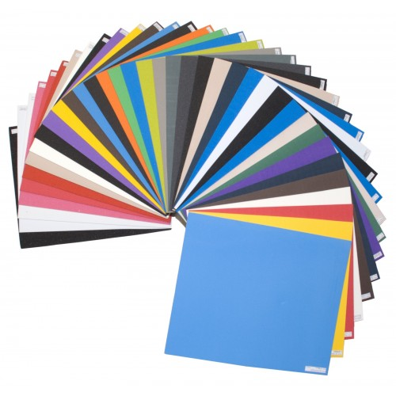

Листы EVA

Цвет: черный, белый, розовый, синий, коричневый, фиолетовый, василек, жёлтый, красный, салатовый, зеленый, оранжевый, голубой.
Производство: Турция
Материал: EVA
Твердость (ШОР): 25, 35, 45, 55, 70, 80
Листовая EVA обладает следующими характеристиками:
- необычная лёгкость – он в 4 раза легче, чем ПВХ;
- материал eva ортопедический, что означает - для него характерны эластичность, упругость, гибкость;
- прекрасная амортизация;
- высокая износостойкость;
- диэлектричность;
- стойкость к воздействию химических веществ (масел, растворителей);
- гигиеничность (стоек к воздействию бактерий и грибков);
- не вызывает аллергии, что позволяет применять его во всех видах ортопедии.
Материал обладает широким применением во многих областях. Он подойдет для изготовления обуви (подошва для одноразовой обуви, домашних и пляжных тапочек), благодаря своей легкости, гибкости и эластичности. Обувь из EVA практически не ощущается, ноги совершенно не устают даже после долгой носки. Так же материал подходит для спортивных залов и школ - из него можно изготовить наколенники и налокотники.
Тем, кто ищет, где заказать листовую ЭВА оптом на приемлемых условиях, предлагаем обратить внимание на наш сайт. Компания Жанетт работает на рынке более 10 лет и имеет своих постоянных клиентов. Мы предоставляем своим покупателям широкий ассортимент товара высокого качества по самым демократичным ценам.
Ассортимент листов ЭВА
Если вы ищите листы ЭВА, то у нас их можно заказать в любом количестве и в широком ассортименте. Мы предлагаем листы таких цветов, как белый, розовый, черный, желтый, коричневый, фиолетовый, красный, салатовый. Как видно, в нашем каталоге товаров потенциальные покупатели смогут найти продукцию на любой вкус.
Сфера эксплуатации листовой ЭВА
Что касается сферы применения современного материала ЭВА, то он используется при:
- производстве подошвы;
- изготовлении комфортных мягких полов;
- изготовлении автомобильных ковриков.
Спектр применения этого материала весьма широк, так как он обладает незаурядными эксплуатационными характеристиками.
Технические характеристики материала ЭВА
Производство ЭВА листов компанией Жанетт выполняется с использованием инновационных технологий, из безопасного и проверенного сырья и под строгим контролем специалистов. Поэтому потребители получают продукцию, которая соответствует мировым нормам и стандартам качества.
Благодаря инновационным разработкам этот материал обладает следующими качествами:
- прочность и надежность;
- гипоаллергенность и безопасность;
- долговечность и износостойкость;
- водонепроницаемость;
- устойчивость к негативному воздействию окружающей среды.
Этот материал не деформируется и не разрушается под воздействием атмосферных явлений. Ему не страшны ни резкие перепады температуры, ни повышенная влажность.
Также листовая ЭВА радует интересным окрасом, удобством в применении. Этот материал легкий по весу, приятный на ощупь и совершенно безопасный.
Где заказать листовую ЭВА оптом?
Если вы хотите заказать листы ЭВА оптом, делайте это только на нашем сайте www.de-pa.by и www.de-pa.ru, которые находятся на рынке много лет. Мы предлагаем своим покупателям не только широкий ассортимент продукции, индивидуальный подход и оперативность доставки, но и сертификаты качества на весь товар.
Мы с уверенностью можем заявить, что наш листовой материал действительно соответствует мировым нормам производства. Он настолько прочный, что применяется потребителями ив знойное лето, и в студеную зиму. Ему не страшны никакие химические вещества, поэтому его можно мыть любыми моющими средствами.
Особая структура материала не позволяет ему впитывать в себя ни пыль, ни грязь. С его поверхности легко удаляются любые загрязнения.
Упругость материала позволяет ставить на него тяжелые предметы, и на нем не будут оставаться от них следы.
Перечислять преимущества и положительные стороны листового материала ЭВА можно бесконечно. Однако лучше один раз заказать на нашем сайте этот материал и удостовериться в том, что он пользуется заслуженным спросом у потребителей.